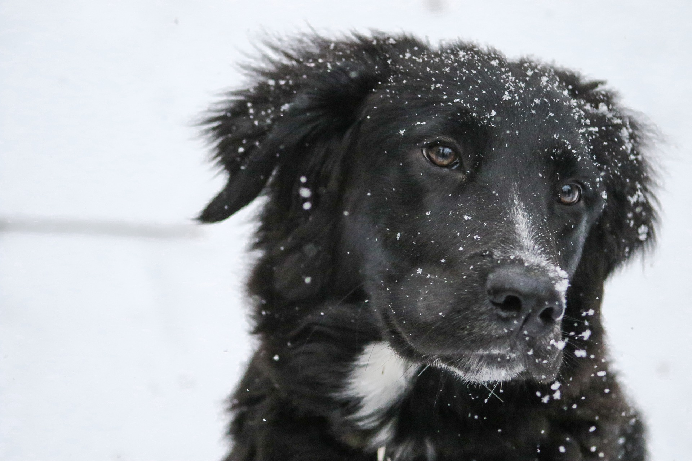

Dog
Dogs can get jealous when their humans display affection toward someone or something else.
- Scientific Name: Canis Familiaris
- Average Length: 14-18 Inches
- Average Lifespan: 10-13 Years
- Habitat: Land
Dog (Canis lupus familiaris) are domesticated animals, not natural wild animals. They were originally bred from wolves. They have been bred by humans for a long time, and were the first animals ever to be domesticated